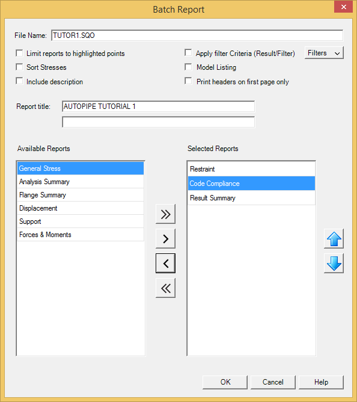

Generating the Report
- Now let's generate the report based on the new options. Select Home > Reports > Output Report > Output Report.
- The Batch Report dialog is displayed.

- Remove the Displacement, Support, and Forces & Moments reports from the Selected Reports
list.
| Note: |
AutoPIPE provides options to graphically select the points to be included in the output report, and options to filter output results based on user-specified criteria. Refer to Chapter 10 for more information on Result Filters. |
- Press OK to generate the report.